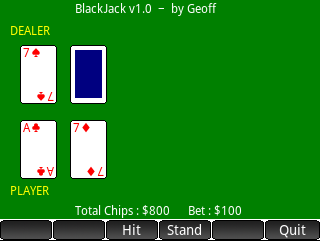

|
Blackjack +- HP Forums (http://www.hpmuseum.org/forum) +-- Forum: HP Software Libraries (/forum-10.html) +--- Forum: HP Prime Software Library (/forum-15.html) +--- Thread: Blackjack (/thread-11478.html) |
Blackjack - Geoff - 10-02-2018 10:30 AM It's been my habit for many HP calculators to program a simple Blackjack game. I finally got that done for my Prime. Nothing fancy. No insurance, no splitting, etc. It's about learning to program, not pretending I'm at a real casino! This works on my Prime with ROM 13865. I believe the ROTATE(grob) and WAIT(-1) options I use are newer, so I can't predict if this program will work on older revisions. Good luck and have fun!! Geoff Screenshot  |